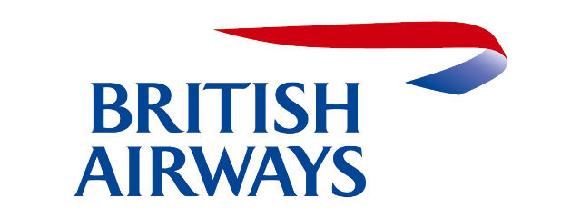

Уральские авиалинии
BRITISH AIRWAYS
Трансаэро
Swiss
Air France
Уральские авиалинии
BRITISH AIRWAYS
Трансаэро
Swiss
Air France
Swiss
| Номер рейса | Пункт назначения | Статус рейса | Плановое время вылета | Фактическое время вылета | Авиакмпания |
|---|---|---|---|---|---|
| 7K 9517 | Анталья (Интернэшнл) | Отправлен | 30 сен 15:00 | 30 сен 16:00 | Уральские авиалинии |
| BA232 | Лондон(Хитроу) | Отправлен | 30 сентября 13:40 | 30 сентября 14:00 |  BRITISH AIRWAYS |
| EY7187 | Санкт-Петербург(Пулково 1) | Задерживается | 30 сен 17:40 | 30 сен 19:40 | Трансаэро |
| LX1326 | Цюрих(Клотен) | Отправлен | 30 сен 17:40 | 30 сен 17:40 | Swiss |
| BA 8776 (совмещен с S7 1156) | Париж(Шарль-де-Голль) | Отменен | Air France |
||
| 7K 9517 | Анталья (Интернэшнл) | Отправлен | 30 сен 15:00 | 30 сен 16:00 | Уральские авиалинии |
| PS 9066 (совмещен с S7 66) | Лондон(Хитроу) | Отправлен | 30 сентября 13:40 | 30 сентября 14:00 | BRITISH AIRWAYS |
| EY7187 | Санкт-Петербург(Пулково 1) | Задерживается | 30 сен 17:40 | 30 сен 19:40 | Трансаэро |
| СУ 4562 (совмещен с FV 155) | Цюрих(Клотен) | Отправлен | 30 сен 17:40 | 30 сен 17:40 | Swiss |
| B2 955 | Париж(Шарль-де-Голль) | Отменен | Air France |
||
| СУ 4562 (совмещен с FV 155) | Цюрих(Клотен) | Отправлен | 30 сен 17:40 | 30 сен 17:40 | Swiss |